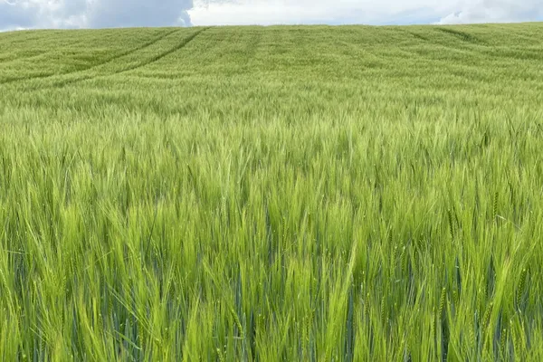

Poland: Polish vodka

Photo: Wieslaw Lewoszewski on Unsplash
Poland claims one of the oldest vodka traditions, and Polish Vodka is a protected name.
How it's made
To be labelled Polish Vodka it must be made in Poland from Polish-grown grains or potatoes, with nothing added but water.
Grain or potatoes are mashed and fermented, then distilled in column stills into a high-strength raw spirit. This is rectified, diluted with water and filtered; rye gives spice and body, potato a creamy texture.
History
Some of the earliest written mentions of vodka come from Polish court records of the early 1400s. Over the centuries Poland developed a strong tradition of grain and potato vodka, plus flavoured vodkas and fruit liqueurs (nalewki).
Ageing and label terms
Polish vodka is unaged and clear; labels usually name the raw material (rye, wheat, potato). Flavoured styles such as bison grass vodka or nalewka liqueurs are separate categories.
Styles
Rye vodka (spicy, bready), wheat vodka (soft and smooth), potato vodka (creamy and full), and flavoured vodkas such as Żubrówka.
Rules and protected names
Polska Wódka / Polish Vodka is a protected geographical indication: it must be made in Poland from rye, wheat, barley, oats, triticale or potatoes grown in Poland, with nothing added except water.
How to serve and classic cocktails
Serve ice-cold and neat in small glasses with food. Classic drinks include the Szarlotka (bison grass vodka with apple juice), the Bloody Mary and the Vodka Martini.
With food
Zakąski, the Polish table of small bites: pickled cucumbers, herring, rye bread, pierogi and cured meats.
Good to know
In Poland vodka is traditionally drunk with food and toasts, not sipped slowly on its own.
Producers
- Belvedere
- Wyborowa
- Żubrówka
- Chopin
Bottles to try
Belvedere Pure
Rye vodka: soft vanilla, cream and a light peppery finish.
Serve: Ice-cold or in a Martini
Żubrówka Bison Grass Vodka
Soft rye vodka scented with cut hay, vanilla, almond and coconut.
Strength: 37.5% in the UK (40% in Poland) · Age and cask: Unaged
Flavoured with bison grass from north-east Poland, and each bottle contains a single blade of the grass. A classic Polish flavoured vodka with a long history.
Serve: With cloudy apple juice (a Szarlotka)
Chopin Potato Vodka
Creamy, earthy and slightly sweet, with a smooth finish.
Strength: 40% · Age and cask: Unaged
Made in Poland only from local potatoes, which give a fuller, creamier texture than grain vodka. Chopin helped revive interest in premium potato vodka in the 1990s.
Serve: Ice-cold and neat, or in a Martini
Wyborowa Vodka
Clean rye: light bread, white pepper and a crisp, dry finish.
Strength: 37.5% (40% in some markets) · Age and cask: Unaged
A Polish rye vodka with a history going back to 1823, made in Poznań. It qualifies for the protected 'Polska Wódka' name, which requires Polish-grown grain or potatoes.
Serve: Ice-cold and neat with food, or in a Bloody Mary
Chopin Rye Vodka
Rye spice, dark bread, a touch of cocoa and a full, creamy texture.
Strength: 40% · Age and cask: Unaged
Made from Polish Dankowskie rye at the Chopin distillery in Krzesk, eastern Poland. The brand makes separate single-ingredient vodkas from rye, potato and wheat to show how each tastes.
Serve: Ice-cold and neat, or in a Vodka Martini
Belvedere Smogóry Forest
Rich and rounded: salted caramel, white pepper, rye bread and honey.
Strength: 40% · Age and cask: Unaged
A single-estate vodka made only from Dańkowskie rye grown on the Smogóry Forest estate in western Poland. It shows how much the place where the rye grows can change the taste.
Serve: Ice-cold neat, or in a Martini
Luksusowa Potato Vodka
Smooth and creamy: clean, with a soft earthy sweetness and a little pepper.
Strength: 40% · Age and cask: Unaged
One of Poland's classic potato vodkas. Potatoes give a rounder, creamier texture than most grain vodkas.
Serve: Ice cold, neat, or in a Moscow Mule
Sobieski Vodka
Clean and lightly creamy with soft rye spice and a gentle peppery finish.
Strength: 40% · Age and cask: Unaged
An affordable, widely available Polish rye vodka named after King Jan III Sobieski. Made from Dankowskie rye and distilled in Poland.
Serve: Ice-cold neat, or in a Moscow Mule
Potocki Wódka
Full-bodied rye: bread crust, white pepper and a creamy texture.
Strength: 40% · Age and cask: Unaged
Revives a family vodka tradition of the Potocki noble family, distilled from Polish rye in small batches and filtered only lightly to keep the grain flavour.
Serve: Ice-cold and neat, with pickles
Wyborowa Exquisite
Creamy rye with nutty, slightly sweet bread notes and a clean finish.
Strength: 40% · Age and cask: Unaged
A single-estate Polish vodka made only from Dankowskie rye grown around one country distillery, and protected as Polish Vodka.
Serve: Ice cold, neat, with pickles
Belvedere Lake Bartężek
Fresh and grassy rye vodka with notes of cut hay, white pepper and honey.
Strength: 40% · Age and cask: Unaged
A single-estate vodka made only from Dankowskie rye grown on a farm by Lake Bartężek in northern Poland, meant to show how the place shapes the spirit.
Serve: Chilled and neat, or in a Martini
Chopin Wheat Vodka
Soft and creamy, with gentle sweetness, a hint of vanilla and a clean finish.
Strength: 40% · Age and cask: Unaged
From the Polmos Siedlce distillery in eastern Poland, best known for potato vodka; this version uses Polish winter wheat to show how the base grain shapes texture and taste.
Serve: Ice cold and neat, or in a Martini
Żubrówka Biała
Clean and lightly spicy rye vodka with a crisp, dry finish.
Age and cask: Unaged
A plain rye vodka from the makers of the famous bison grass Żubrówka, filtered for a clean style and one of the best-selling vodkas in Poland.
Serve: Chilled shot with Polish snacks, or with tonic
Belvedere 10
Creamy and silky, with rye bread, white pepper, vanilla and a long clean finish.
Age and cask: Unaged
A luxury bottling made from Diamond rye grown on a single estate and from a single harvest, then rested before bottling. Made at the Polmos Żyrardów distillery that produces all Belvedere.
Serve: Ice cold and neat, or in a Martini
Żołądkowa Gorzka Tradycyjna
Sweet and herbal, with bitter orange, clove, cinnamon and a gentle bite.
A classic Polish herbal vodka made in Lublin by Stock Polska, coloured and flavoured with herbs and spices. Its name means stomach bitter, a nod to its old role as an after-dinner digestif.
Serve: Chilled as a shot, or with ice and apple juice
More vodka regions
Explore all spirits in the interactive guide
The Wine Reference newsletter
New wines, stories and career guides, one email a week at most.
Over 18s only. Unsubscribe any time with one click. Your email is stored securely by Kit and never shared.
Support The Wine Reference
This guide is free, with no paywall. If it helped you choose a bottle, you can buy me a glass and keep it growing.
🍷 Buy me a glass